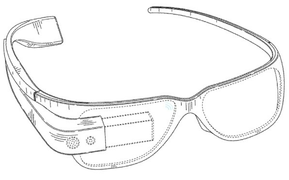

EyeReader
On a daily basis everyone around you are exposed to noise and sounds that deteriorates your hearing abilities. Your beloved headphones is also a cause of bad hearing for younger people. Maybe someone you know actually needs a hearing-aid, but maybe they’re afraid of being frowned upon for using it in such a young age. That’s where our product enters the stage, an invention for making it easier to have deteriorated hearing. "EyeReader" looks just like a regular pair of glasses, but on your side of the glass it exists an integrated screen-reader to help you partake in daily conversations, your lectures on school, and to simpler things as just watching movies at home.